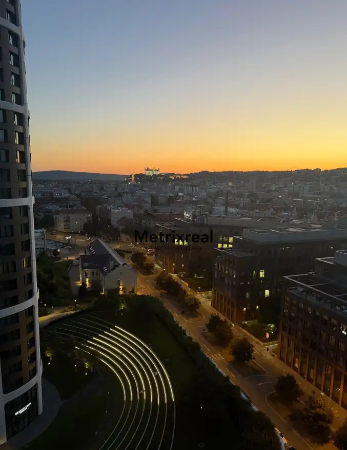
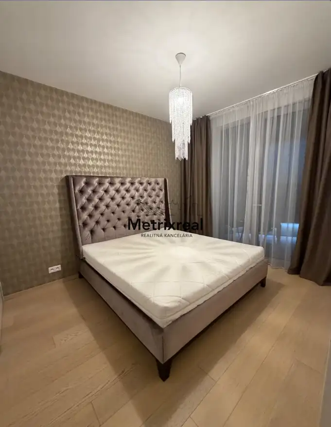
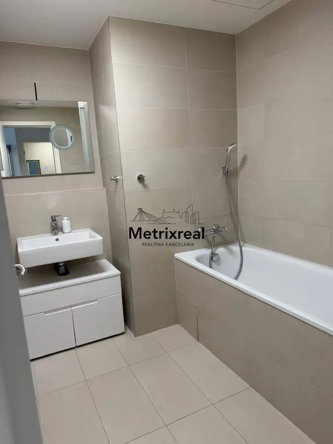
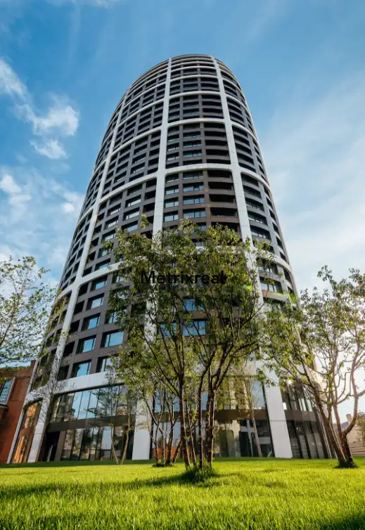
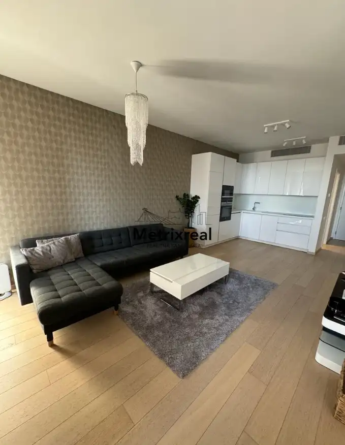
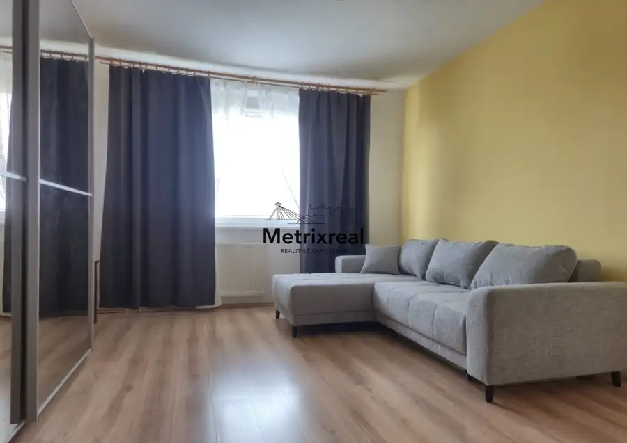
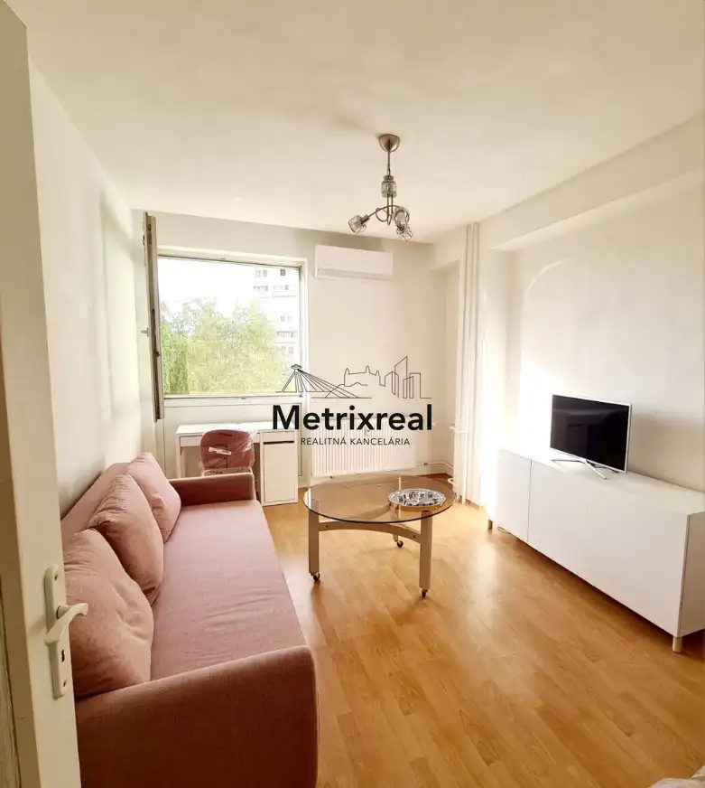
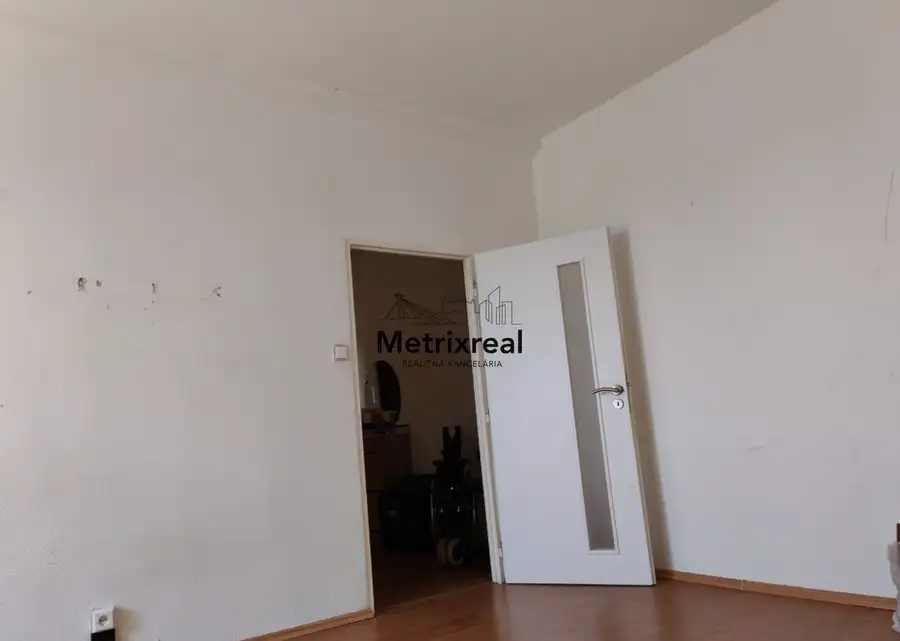

Luxusný 2-izbový byt v SKY PARK s priamym výhľadom na Bratislavský hrad
Staré Mesto, Bratislava





- Dispozícia2-izbový
- Plocha50 m²
- Poschodie15. z 31
- StavNovostavba
- Energetická triedaA
O nehnuteľnosti
Realitná kancelária Metrixreal Vám ponúka na prenájom nadštandardný, kompletne zariadený 2-izbový byt v ikonickom projekte SKY PARK by Zaha Hadid v modernom downtowne (Bratislava – Staré Mesto).Byt sa nachádza na 14. poschodí a je ideálnou voľbou pre jednotlivca alebo pár, ktorí hľadajú reprezentatívne a komfortné bývanie v novom centre mesta s dychberúcim panoramatickým výhľadom na dominantu hlavného mesta – Bratislavský hrad. Praktická dispozícia, vysoký štandard materiálov a kompletné vybavenie umožňujú okamžité nasťahovanie bez potreby ďalších investícií.ZÁKLADNÉ INFORMÁCIEDruh nehnuteľnosti: 2-izbový bytPoschodie: 14. poschodie / 30Výťah: ánoOrientácia: západGarážové státie: áno, možnosť prenájmu v podzemnej garáži (nie je podmienkou)Dostupnosť: voľný ihneďDISPOZÍCIASrdcom bytu je presvetlená obývacia izba prepojená s moderným kuchynským kútom a jedálenským posedením. Z obývačky a priľahlého balkóna je nádherný otvorený výhľad na panorámu Bratislavského hradu. Z obytného priestoru sa plynule prechádza do samostatnej nepriechodnej spálne, ktorá poskytuje dokonalé súkromie a pokoj na oddych.VYBAVENIEByt sa prenajíma kompletne zariadený a vybavený kvalitnými spotrebičmi:Kuchyňa: indukčná varná doska, samostatná vstavaná elektrická rúra, digestor, zabudovaná mikrovlnná rúra a chladnička s mrazničkou.Obývacia izba: pohodlná pohovka, stolík, dizajnový nábytok a Smart TV.Spálňa: manželská posteľ s prémiovým matracom a priestranná vstavaná šatníková skriňa na mieru.Kúpeľňa: klasická vaňa, sanita a zrkadloKlimatizácia a technológie: centrálna klimatizácia a rekuperácia vzduchu zabezpečujúce čerstvý vzduch a optimálnu teplotu počas celého roka.Podmienky nájmu: Vhodný pre 1 až 2 dospelé osoby.LOKALITA & LIFESTYLEProjekt SKY PARK by Zaha Hadid patrí medzi najprestížnejšie rezidenčné adresy v Bratislave vďaka svetovej architektúre a perfektnej polohe priamo v downtowne.Zázemie projektu a park: 24/7 recepcia, bezpečnostná služba a súkromný zelený park s rozlohou viac ako 35 000 m² s oddychovými zónami priamo pod vežami.Občianska vybavenosť: Priamo v parteri budovy nájdete potraviny, kaviarne, prémiové reštaurácie, lekáreň aj vinotéku.Pešia dostupnosť & nákupy: V pešej dostupnosti sú nákupné centrá Eurovea a Nivy, nábrežie Dunaja, historické centrum mesta a biznis centrá (Twin City, Apollo).Doprava a výborná dostupnosť: Rýchle napojenie na diaľničný obchvat D1 a zastávky MHD s priamymi spojmi do celej Bratislavy. Pre koho je byt ideálny?Pre jednotlivca alebo pár, ktorí hľadajú reprezentatívne, moderné a tiché bývanie v centre mesta.Pre klientov, ktorí ocenia 24/7 recepciu, súkromný park, relax vo vani a večerný výhľad na osvetlený Bratislavský hrad.CENA A PODMIENKYMesačné nájomné: 1 100 € / mesiacZálohy za energie a služby správcu: 350 € / mesiacCelková cena za byt: 1 450 € / mesiac (vrátane energií a služieb)Garážové státie (voliteľné): +100 € / mesiac v podzemnej garáži (prenájom parkovacieho miesta nie je podmienkou)Celková cena komplet s garážou: 1 550 € / mesiacVratná kaucia: 1 450 € (v prípade nájmu s garážou 1 550 €)Provízia pre RK: 1 450 €PREČO PRÁVE TENTO BYT?Ikonický panoramatický výhľad na Bratislavský hrad priamo zo 14. poschodiaKompletne zariadený interiér pripravený na okamžité bývanie bez ďalších investíciíKomfortná kúpeľňa s vaňouCentrálna klimatizácia a rekuperácia vzduchu24/7 recepcia, bezpečnosť a privátny parkMožnosť voliteľného prenájmu garážového státia Pešia dostupnosť do Eurovea, Nivy aj Starého MestaZAUJAL VÁS TENTO BYT?Ak hľadáte prémiové, kompletne zariadené bývanie s výhľadom na dominanty mesta a kompletným servisom priamo v budove, radi Vám poskytneme viac informácií alebo dohodneme osobnú obhliadku.Sme členom Realitnej únie SR, čo pre Vás znamená absolútnu garanciu férového, transparentného a bezpečného priebehu celej transakcie.KONTAKT PRE OBHLIADKUBc. Vladyslav Chornyi – realitný maklérTelefónne číslo: +421 918 026 238E-mail: chornyi@metrixreal.skMetrixreal – Realitná kanceláriaE-mail: info@metrixreal.sk | Tel.: +421 951 778 117
Parametre
- Cena vrátane energií
- Nie
- Druh
- 2 izbový byt
- Dátum zverejnenia
- 21. 08. 2026
- Energetický certifikát budovy
- A
- Energie
- 350
- Orientácia
- Západná
- Podlažie
- 15
- Počet lodžií
- 1
- Počet nadzemných podlaží
- 31
- Počet parkovacích miest v garáži
- 1
- Počet spální
- 1
- Rok kolaudácie
- 2020
- Rok výstavby
- 2017
- Stav nehnuteľnosti
- Novostavba
- Typ
- Prenájom
- Typ konštrukcie
- Železobetónová
- Vybavenie
- Výťah, Lodžia, Garážové státie, Vyhradené parkovanie, Strážna služba, Recepcia
- Vykurovanie
- Ústredné, Rekuperácia, Klimatizacia
- Úžitková plocha
- 50 m²
Kde to je


Mohlo by Vás zaujímať

BytNové Cena na vyžádáníPrenájom: Priestranný 3-izbový byt (68 m²) s loggiou a panoramatickým výhľadom – Petržalka, Gessayova ulica Petržalka, Bratislava 3-izbový68 m²12. podlažie
BytNové 115 000 €STAVBÁRSKA 40 | VRAKUŇA | Zariadený a klimatizovaný 2-izbový byt 38 m² s 2 samostatnými izbami | Výborná investícia s overeným 2-ročným nájomcom alebo Vrakuňa, Bratislava 2-izbový38 m²4. podlažie
BytNové Cena na vyžádáníPrenájom – Priestranný a svetlý 1-izbový byt (44 m²) so samostatnou kuchyňou – Ružinov, Meteorová ulica Ružinov, Bratislava 1-izbový44 m²6. podlažie